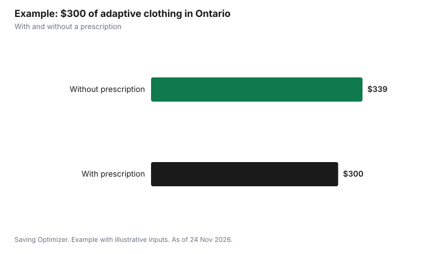

Clothing · Canada
Adaptive Clothing in Canada: Options, Costs and Possible Supports

Adaptive clothing makes dressing easier with features like magnetic closures, open backs and seated cuts. Canadian brands such as Silverts and IZ Adaptive sell pants from about $55 to $135. Before you buy, ask your doctor for a prescription: Silverts says that removes GST/HST on the item. Simple DIY changes, like magnetic buttons or elastic laces, cost even less.
Key takeaways
- Silverts open-back fleece pants: $54.98; seamless-back pants: $105 (checked 24 Nov 2026).
- IZ Adaptive seated-fit pants: about $89.25 on sale.
- A doctor's prescription can remove GST/HST on adaptive clothing.
- Adaptive clothing generally isn't on CRA's medical expense list; check before claiming.
- DIY adaptations like magnetic buttons cost little.
Options and costs
| Brand and item | Price | Best for |
|---|---|---|
| Silverts, Women's Open Back Fleece Pant | $54.98 | Assisted dressing |
| Silverts, seamless-back pants | $105 | Wheelchair users, seated and standing |
| IZ Adaptive, Game Changer seated-fit pants | About $89.25 on sale | Wheelchair users |
Supports to ask about
- Your doctor: a written prescription to remove GST/HST.
- Your provincial disability or assistive devices program.
- Disability charities and condition-specific associations.
- Workplace or private health insurance.
- Occupational therapists for dressing advice.

DIY adaptations and savings
Swap buttons for magnetic closures, add zipper pulls, use elastic shoelaces, or have a tailor add side openings. Example: buying $300 of adaptive clothing with a prescription in Ontario avoids 13% HST, saving $39.
See tailoring costs and the medical expense tax credit.
Sources
- Silverts Canada, Save the tax with prescriptions for adaptive clothing, checked 24 Nov 2026.
- Silverts Canada, Adaptive pants, checked 24 Nov 2026.
- IZ Adaptive, Women's bottoms, checked 24 Nov 2026.
- Spinal Cord Injury BC, Adaptive clothing resources (updated 20 May 2026), checked 24 Nov 2026.
- Canada Revenue Agency, RC4065 Medical Expenses, checked 24 Nov 2026.
Frequently asked questions
What is adaptive clothing?
Clothing with features like magnetic closures, open backs or seated cuts that make dressing easier.
Where can I buy adaptive clothing in Canada?
Canadian brands include Silverts and IZ Adaptive, and some mainstream brands have adaptive lines.
Is adaptive clothing tax-free?
With a doctor's written prescription, it can be GST/HST-free, according to Silverts.
Can I claim adaptive clothing as a medical expense?
It generally isn't on CRA's list; check RC4065 or ask a tax professional.
How can I adapt clothes myself?
Magnetic buttons, zipper pulls, elastic laces or a tailor's side openings.
Researched and drafted with AI assistance and fact-checked against official Canadian sources. How we create content.
Note: Not tax or medical advice. Amounts are examples. Education only.